Extra Skull CoinsNEW
Skull coins to get on your extra page.
- 🔓 EXP is recommended.
- Vengeance page is a ~4x damage increase if you opt for it instead.
- "Death Goad" does NOT double the revives you get per death.
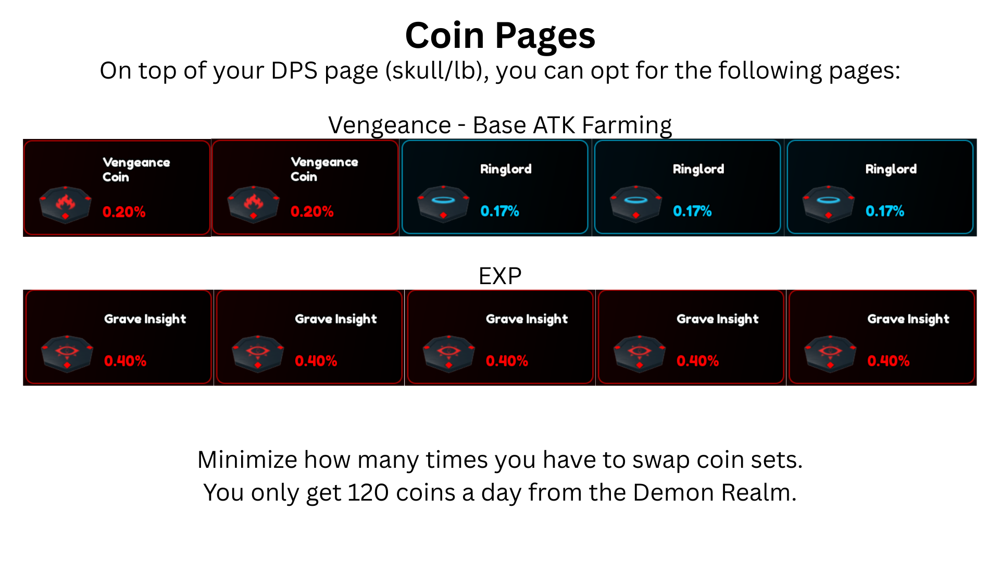
Path 1 = DPS · Path 3 = Souls · Path 4 = LB
Soul Tree Guide Beginners
Which Soul Tree nodes to unlock and upgrade first, and what to skip until later.
- 🔓 Unlock: 1-1 → 1-2 → 2-1 → 2-2 → 1-3 → 1-4 → 4-2-2-2 → Path 3 → 2-3 → 2-2-1 → 2-2-2
- 🚫 Don't Get: Skip 2-4 until both Ring Pages are around 20k.
- 📈 Upgrade: 2-2 → Path 1 → 4-2-2-2 → Soul Generator → 3-3 → 2-3
- ⚔️ 1-2-1: Get it once your Swords are maxed.
Path 1 = DPS · Path 3 = Souls · Path 4 = LB
Evolutions F2P / non-DPS / Fresh Player
The recommended weapon evolution path if you're free-to-play or not focused on pure DPS. Don't skip ahead — each stage lists the damage multiplier and the checkpoint you need before evolving further.
- Main line: Scythe → Shield Breaker → Sword of Light/Dark. Evolve Vanguard any time you reach Guild Tier 5.
- Do not proceed past Vanguard Evolution 2 until it's fully achieved.
- Use a random Base Attack piece before Vanguard is evolved — don't over-invest; 1 star is enough.
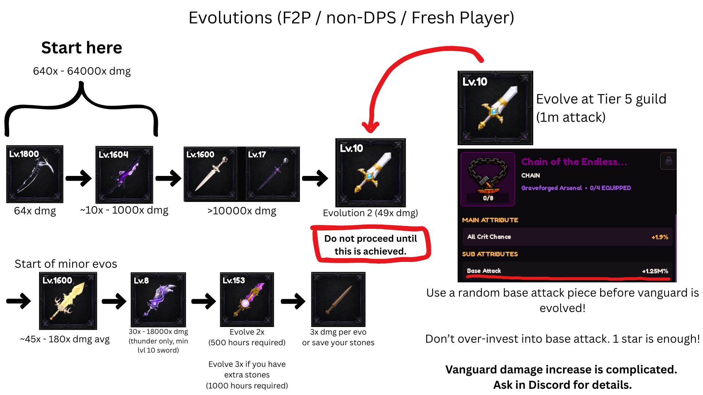
Ringlord Set
A base attack farming set, not a damage set — don't build damage stats on it.
- 2-piece: Inactive Soul Ring pages grant 50% of their effects.
- 4-piece: Increases Ringlord effects by 500%.
- Ringlord Effect and All Weapon Effect are the only two main stats that matter. The latter is slightly better.
- Use Vengeance with Ringlord to farm base attack.
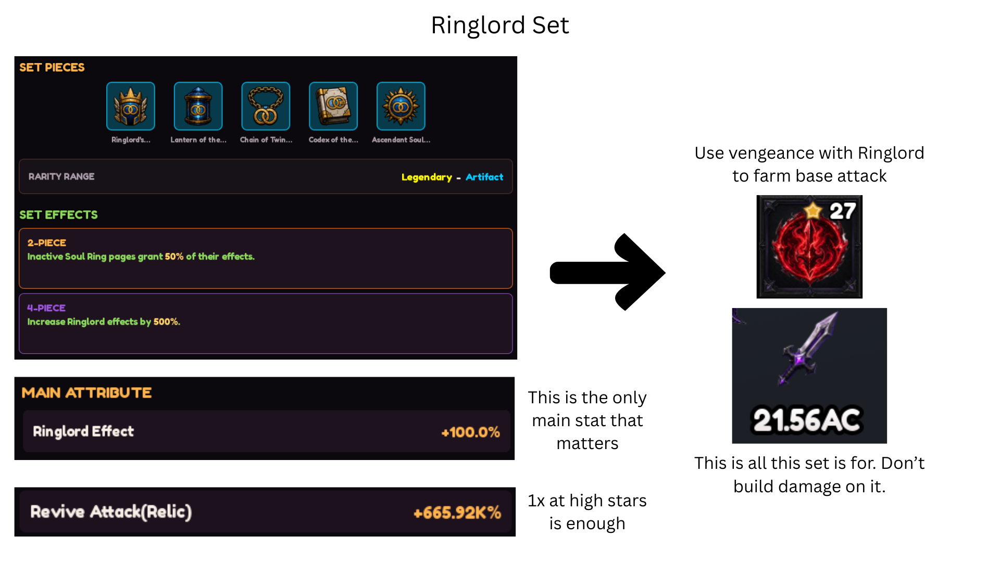
Optimal Late-Game LB Setup
Thunder/Lightning-build gear: Thunder Doom (LB), Seventh Omen (M7), and 3x Ringlord (Halo), paired with the Doomstorm 4-piece set.
- 2-piece: +3 to the maximum repeat count of Thunder Apotheosis.
- 4-piece: Thunder Apotheosis multiplies each repeated strike's damage by x3.
- Relic priority: x2 Critical Damage, Final Damage, Thunder Damage, Shield Damage Multiply, +1 of the above.
- Build Thunder Damage last — but keep it if you get a lucky roll.
- You can keep 1x Thunder Pact for early ascensions, but replace it with a Halo after.
- If you happen to get a Halo first, just keep it.
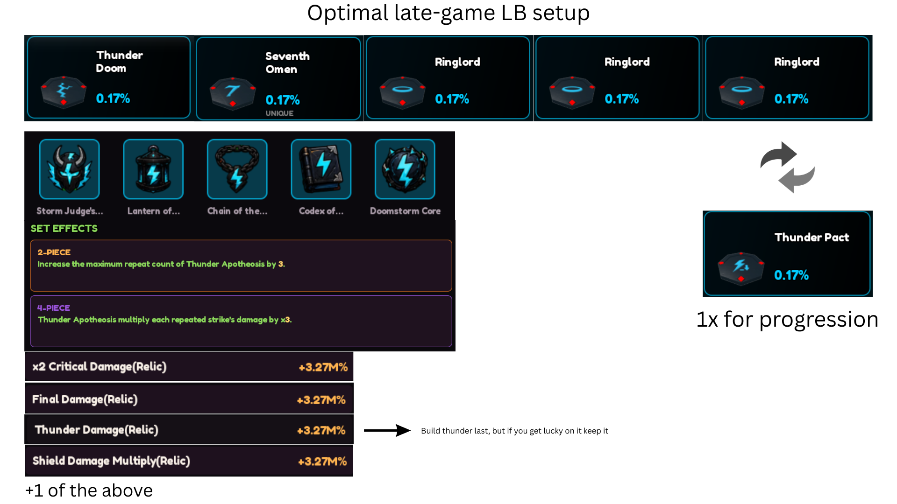
Optimal Skull Set Setup 20M+ revives needed
Abyss Walker (Skull Coin), Weapon Sigil, Seventh Omen (M7), and 2x Ringlord (Halo), combined with the Death King 2-piece + Gravesmith 2-piece set.
- 2-piece: Each Death King level increases Skull damage by 100%.
- 2-piece: Converts Weapon Sigil bonuses into independent damage.
- Relic priority: x2 Critical Damage, Final Damage, Skull Damage, Shield Damage Multiply, +1 of the above.
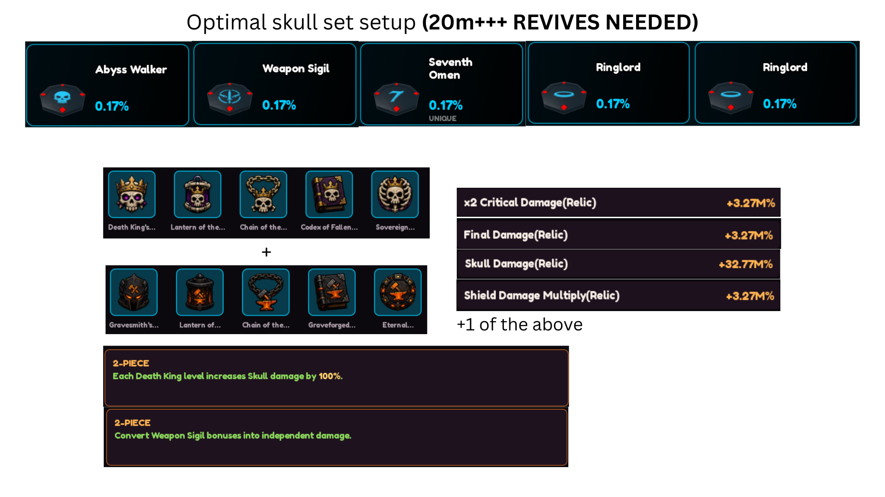
Skull vs. LB: Revive Count Thresholds
Which build to run depends on your revive count and whether you're farming Guild or Tower content.
- Guild: No potions/codex → 0 revives. Crit/Insight potions + AWE/Lv. 2800 weapons → 20M–40M.
- Tower: 20M–45M revives across every stage.
- Why 20M–45M: These are the two thresholds where the crossover can happen, not a range you're stuck in. 20M is the earliest: it's when Skull overtakes an unbuffed LB with no potions — LB never wins even at 19M revives without them. 45M is the latest: after 45M revives, Skull out-damages LB in every situation, even a fully-potted LB running every weapon effect.
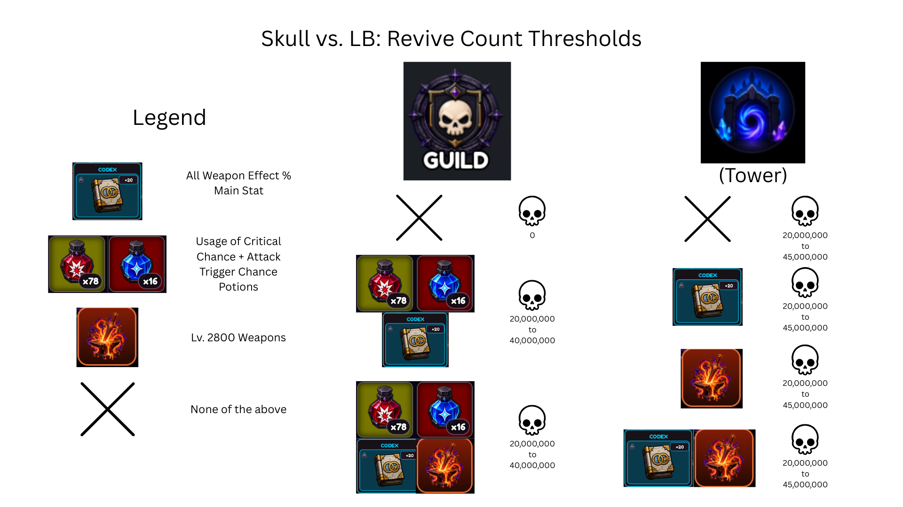
Optimal Late-Game Soul Ring Setups
Page 1 loadouts differ by target content; Page 2 is a shared general-purpose page.
- Slayer + Venge: For quickly cutting through low rebirths only.
- If progress stalls and levels get heavy, farm base damage with the Ringlord set instead.
- Upgrading a ring from Lv.20000 to Lv.40000 costs ~187B souls per ring (~3.36T total across all rings).
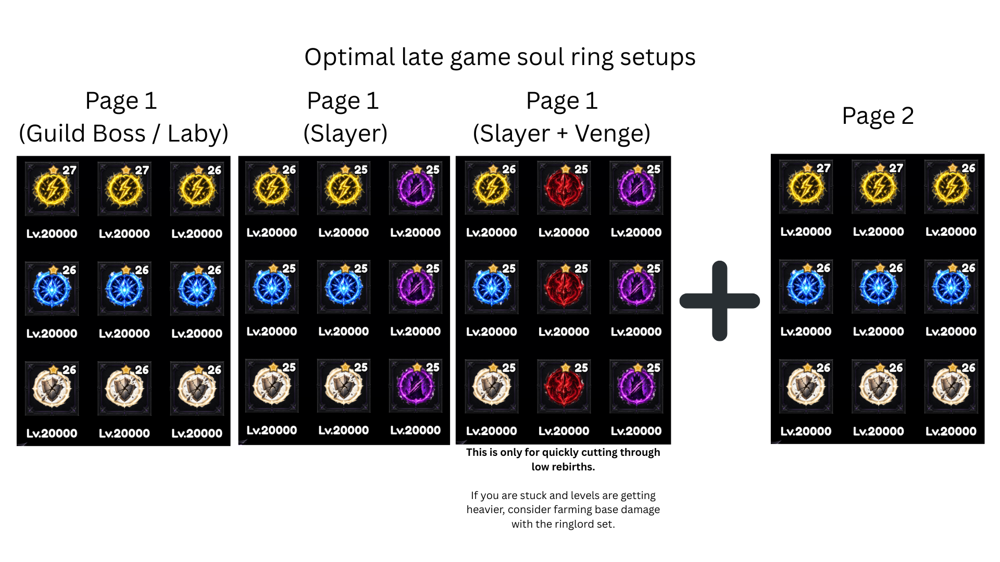
Optimal Late-Game Soul Ring Setups
Page 1 loadouts differ by target content; Page 2 is a shared general-purpose page.
This is for the Skull Coin build, which is a late game build.
- Slayer + Venge: For quickly cutting through low rebirths only.
- If progress stalls and levels get heavy, farm base damage with the Ringlord set instead.
- Upgrading a ring from Lv.20000 to Lv.40000 costs ~187B souls per ring (~3.36T total across all rings).
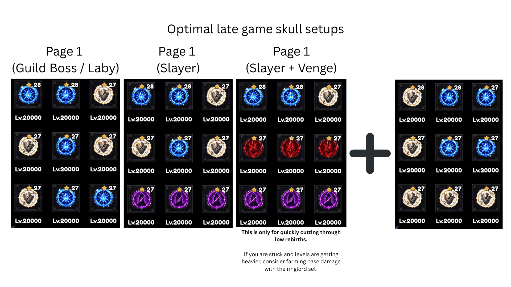
Best Relic Stats
Which main stat to chase per relic slot, and sub stat priority for each build.
- Main stat — Core: Ringlord.
- Main stat — Chain: All Critical Damage.
- Main stat — Codex: All Weapon.
- Main stat — Mask & Lantern: Attack Speed / Shadow / Critical Chance — doesn't matter which.
- Sub stats — LB: Final Damage > x2 Critical Damage > Shield Damage > Thunder Damage. 5th piece can dupe Final Damage or x2 Critical Damage, or use Challenge HP for tower climbing.
- Sub stats — Skull: Final Damage > x2 Critical Damage > Shield Damage > Skull Damage. 5th piece can dupe Final Damage or x2 Critical Damage, or use Challenge HP for tower climbing.
How to Upgrade Your Relics
Three ways to modify a relic: Rerolls, Resets, and Hellfire.
- Rerolls: change every stat, redistribute stars randomly, 10% chance to add an extra star (max 5).
- Resets: reset relic level to 0 but keep the main stat; stars are removed and re-rolled from scratch.
- Hellfire: reduces relic level by 4, which in practice removes one latest star (needs a Devil's Horn to push 5★ → 6★).
- 5★ and under relics should only use Resets.
- Priority for special-type relics: Necklace > Codex > Core.
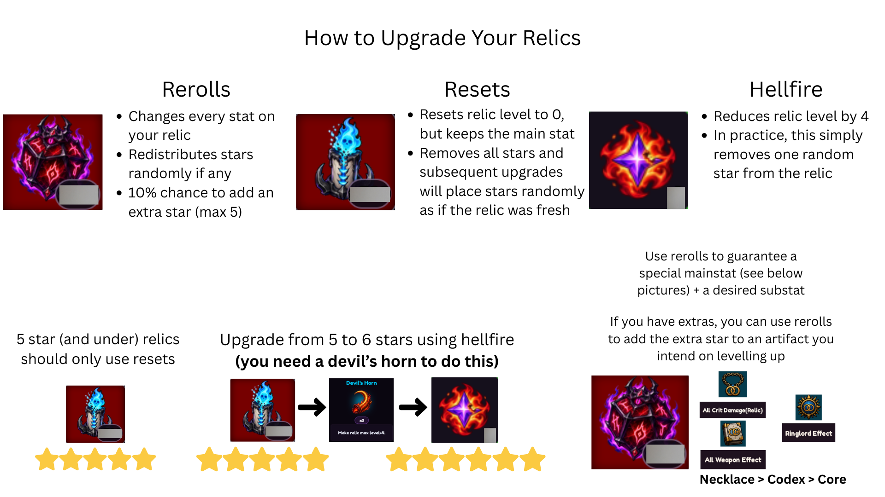
Sub-Stat Stars
Each star on a sub-stat multiplies it again, and the multiplier doubles with every star. Rarity caps how many stars a sub-stat can reach. 6★ can't be rolled: using a Devil's Horn on an Artifact relic raises its max level from 20 to 24, which unlocks one more enhancement and with it a 6th star.
| Stars | Effect | Total vs Base | Max For | Odds |
|---|---|---|---|---|
| 0★ | Base value | x1 | – | – |
| 1★ | x2 from 0★ | x2 | Rare | 1 in 4 |
| 2★ | x4 from 1★ | x8 | Epic | 1 in 16 |
| 3★ | x8 from 2★ | x64 | Legendary | 1 in 64 |
| 4★ | x16 from 3★ | x1,024 | Mythic | 1 in 256 |
| 5★ | x32 from 4★ | x32,768 | Artifact | 1 in 1,024 |
| 6★ | x64 from 5★ | x2,097,152 | Artifact | Devil's Horn only |
Relic Set Bonuses
Equip 2 relics of the same set for the 2-piece bonus and 4 for the 4-piece bonus. Set bonuses apply whatever the relic's rarity.
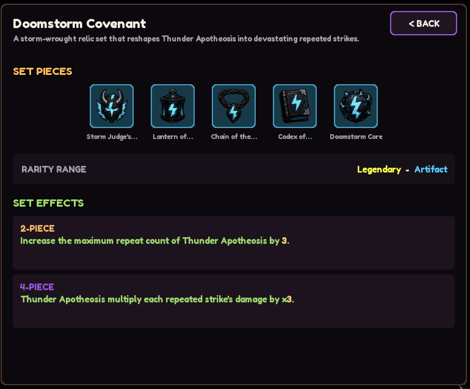
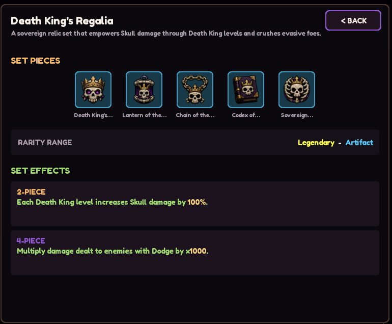
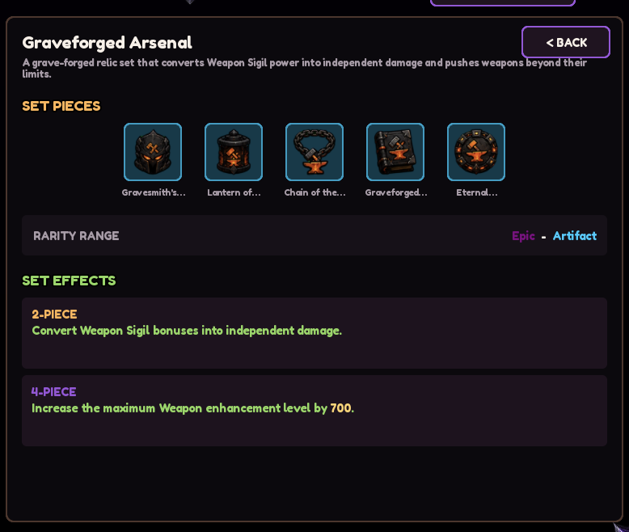
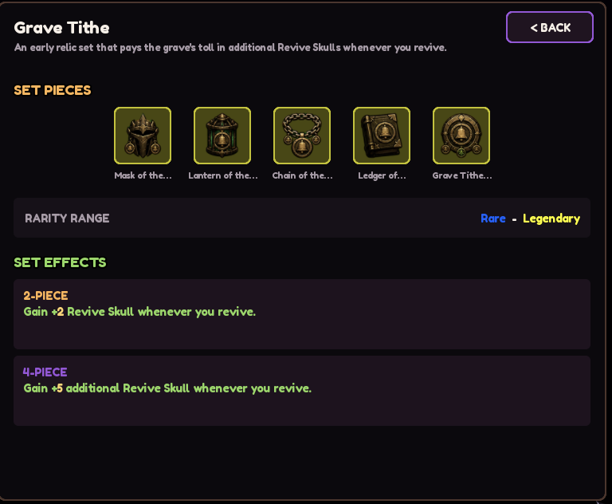
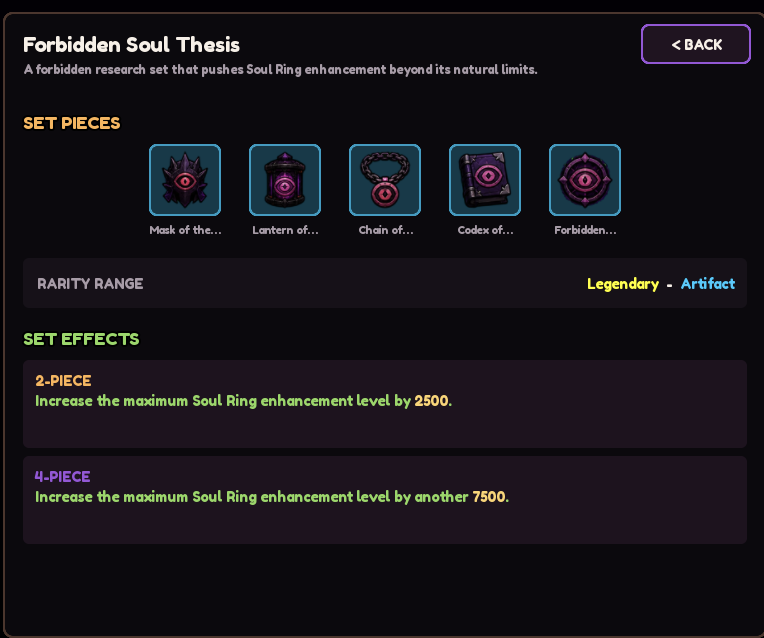
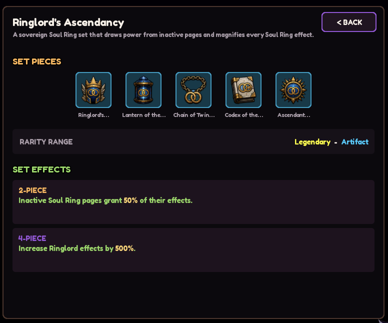
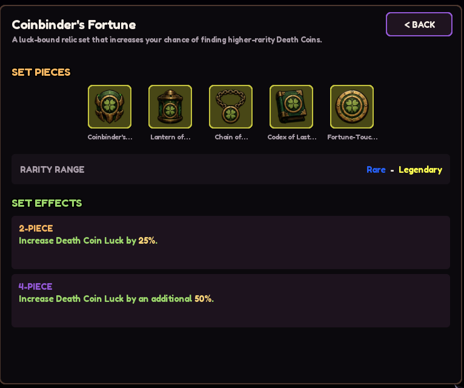
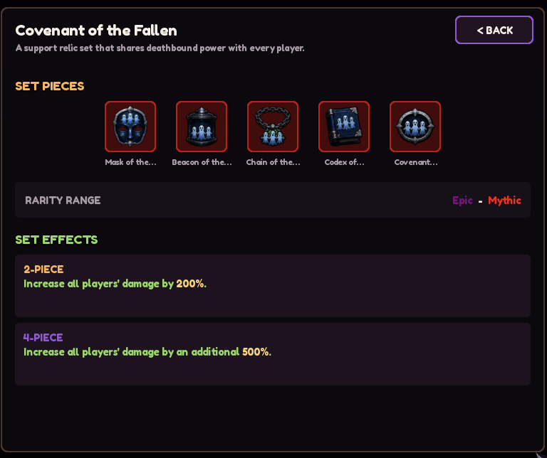
⚠ Always wear it for Guild Boss. Equip Covenant of the Fallen every time you go in there.
Challenge HP Reduction — Is It Any Good?
Short answer: yes, but build it last.
- 5★ relics → ~3.27x damage increase in Tower & Hell Road (≈ under 3 tower levels).
- 6★ relics → ~144x damage increase in Tower & Hell Road (≈ 22 tower levels).
- It should not be your first 6★ stat — other stats net a 64x damage increase (≈18 tower levels) that's also usable outside the tower, which outweighs Challenge HP Reduction even accounting for the extra ascension it grants.
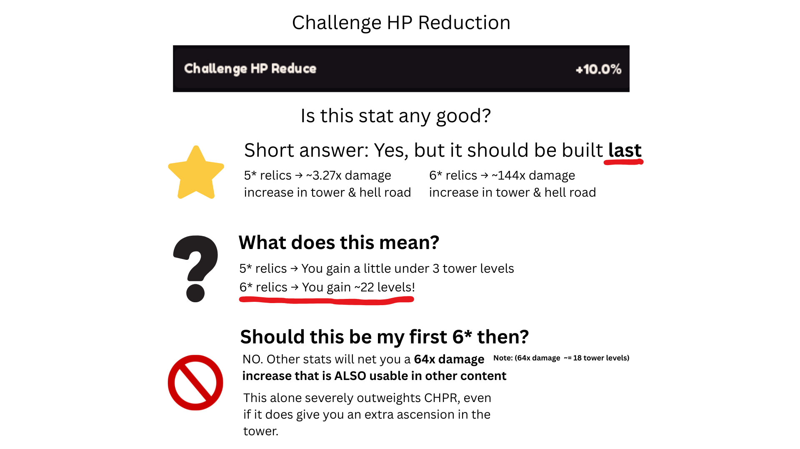
Endless Abyss
- Gain 1 Abyss Core per depth.
- Every 5 depth: +5 Abyss Core and a Buff for the current abyss challenge.
- The challenge fails once your HP is depleted.
- HP works the same as in Nightmare Labyrinth: 10,000 + (Curse King Level × 20).
Pro tip: once your damage is maxed out deep in the Abyss, play manually so the Taiji effect stays on the whole time. That gets you a couple of extra depths.
Taiji is the Dual-Sword skill you unlock by evolving both the Sword of Light and the Sword of Darkness. It activates on attack for 10s (30s cooldown): attacks hit twice, and you get an independent damage bonus that stacks separately from all your other damage bonuses. Its power is (Light Lv. + 1) × (Dark Lv. + 1).
Abyss Run Rewards
- Rewards are weekly. Check your current rank and claim last week's rewards in Weekly Rewards; your group leaderboard is on the Abyss ranking board. You stay Unranked for the week until you start an Abyss challenge.
- You compete in a 10-player bracket, grouped by Ascension in steps of 5 (5–9, 10–14, 15–19…). You only rank against the 9 other players in your bracket.
- Each reward has two parts. Soul Ward depends on your reward tier, which groups Ascension in steps of 20 (5–19, 20–39…). Abyss Core depends on your bracket.
- Rank 1 Abyss Core is 100 × (the top Ascension of your bracket + 1), so 5,500 for the 50–54 bracket. Ranks 2 and 3 get 60% of that, and Ranks 4–10 get 40%.
- Example: at Ascension 53 you compete in the 50–54 bracket. Rank 1 pays 15 Soul Ward (40–59 tier) and 5,500 Abyss Core (50–54 bracket).
Soul Ward by tier
| Ascension Tier | Rank 1 | Rank 2 | Rank 3 | Ranks 4–10 |
|---|---|---|---|---|
| 5–19 | 5 | 4 | 3 | 2 |
| 20–39 | 10 | 8 | 7 | 5 |
| 40–59 | 15 | 13 | 11 | 9 |
| 60–79 | 20 | 18 | 16 | 12 |
| 80+ | 25 | 22 | 19 | 15 |
Abyss Core by bracket
| Bracket | Rank 1 | Ranks 2–3 | Ranks 4–10 |
|---|---|---|---|
| 5–9 | 1,000 | 600 | 400 |
| 10–14 | 1,500 | 900 | 600 |
| 15–19 | 2,000 | 1,200 | 800 |
| 20–24 | 2,500 | 1,500 | 1,000 |
| 25–29 | 3,000 | 1,800 | 1,200 |
| 30–34 | 3,500 | 2,100 | 1,400 |
| 35–39 | 4,000 | 2,400 | 1,600 |
| 40–44 | 4,500 | 2,700 | 1,800 |
| 45–49 | 5,000 | 3,000 | 2,000 |
| 50–54 | 5,500 | 3,300 | 2,200 |
| 55–59 | 6,000 | 3,600 | 2,400 |
| 60–64 | 6,500 | 3,900 | 2,600 |
| 65–69 | 7,000 | 4,200 | 2,800 |
| 70–74 | 7,500 | 4,500 | 3,000 |
| 75–79 | 8,000 | 4,800 | 3,200 |
| 80+ | 8,500 | 5,100 | 3,400 |
Confirmed in-game for the 25–29, 40–44, 50–54, 55–59, 60–64 and 70–74 brackets and for 80+. The other brackets follow the same formula. The 5–19 Soul Ward row comes from a community infographic and is unconfirmed. We don't know yet whether Abyss Core keeps rising past the 80–84 bracket.
Nightmare Labyrinth
- Your HP in the labyrinth is 10,000 + (Curse King Level × 20).
- Green doors mean every mob behind that door is cleared.
- The white thread leads you to the last remaining enemy in the dungeon.
Labyrinth Tickets
- Entering is free: the ticket is only spent when the boss spawns. It costs 1 ticket on Easy, Medium and Hard, and 3 on Hell.
- You get 3 free tickets every day at 00:00 UTC.
- You can hold up to 30 tickets. Unused tickets carry over, so you can stockpile them and do several runs in a row.
- Buy more from:
- Guild Shop: 2,000 Guild Coins
- Time Shop: 10 Time Coins
- Event Shop, when an event is active
- Robux Shop: 99 Robux each, up to 6 per day (resets at 00:00 UTC)
Chests
Levels 1/2/3 give 2/3/5 random chests. Solving the puzzle adds one guaranteed chest: Epic on Easy, Legendary on Medium, Mythic on Hard, Artifact on Hell.
Chests can drop Gold Weapon Stones. Each one gives +1 level to the Timeforged Sword, Sword of Darkness, Shadow Sword or Midnight Harvester. See Gold Weapon Stone: SoD or TF? for where to spend them, and the Labyrinth Rewards calculator for expected drops.
Death Knight
- The Death Knight has a 50% chance to spawn when you enter the labyrinth (up from 10% in update 12.2).
- Killing it gives a ×3 Revive Attack buff for 2 / 4 / 6 / 8 hours on Easy / Medium / Hard / Hell.
- You can get the Death Knight reward once per day, across all difficulties.
Nightmare Buff Drops
The boss has a small chance to drop the Nightmare Buff (the pillar buff). The chance goes up with difficulty and level:
| Difficulty | Level 1 | Level 2 | Level 3 |
|---|---|---|---|
| Easy | 0% | 0% | 0% |
| Medium | 0.05% | 0.10% | 0.15% |
| Hard | 0.20% | 0.40% | 0.60% |
| Hell | 1.2% | ~1.8%* | 2.5% |
In-game, each difficulty only shows a range (Level 1 – Level 3). The Easy to Hard per-level values come from an older data table that matches those ranges. * Hell's Level 2 value is our estimate, roughly halfway between Level 1 and Level 3. Not confirmed.
Two Nightmare Buff pillars now have levels: Covenant of Ten Thousand Souls and Forge of Divinity. Pillar levels are global: every Nightmare Buff drop, by any player, counts toward one shared total, and the level applies to everyone. The count never resets. For example, “LV.5 · 64/70” means 64 drops so far, with Level 6 at 70.
Covenant gives + Soul Ring Level. Forge raises the Weapon enhancement cap and lowers enhancement cost.
| Level | Drops | Covenant | Forge Cap | Forge Cost |
|---|---|---|---|---|
| 1 | 1 | +20,000 | +1,000 | −10%* |
| 2 | 10 | +25,000 | +1,200 | −11%* |
| 3 | 20 | +30,000 | +1,400 | −12%* |
| 4 | 30 | +35,000 | +1,600 | −13%* |
| 5 | 50 | +40,000 | +1,800 | −14% |
| 6 | 70 | +45,000 | +2,000 | −15%* |
| 7 | 90 | +50,000 | +2,200 | −16%* |
| 8 | 120 | +55,000 | +2,400 | −17%* |
| 9 | 150 | +60,000 | +2,600 | −18%* |
| 10 | 180 | +65,000 | +2,800 | −19%* |
* Only Level 5’s −14% is confirmed in-game. The other cost cuts assume −10% at Level 1 and 1% more per level.
Hidden Chest
- At least one player needs the Abyss Walker Death Coin and must hit the boss at least once. This unlocks the hidden mechanism.
- Find the Roman numerals etched on the walls inside the rooms and read them left to right.
- After the boss is dead, walk into the doors in that order. Example:
134526→ I → III → IV → V → II → VI.
Boss HP and Shield
Bigger parties face a tougher boss: compared to solo, both HP and Shield are ×1.7 with 2 players, ×2.35 with 3 and ×3 with 4.
Easy
| Level | 1 Player | 2 Players | 3 Players | 4 Players |
|---|---|---|---|---|
| Level 1 ❤️ HP | 10AV | 17AV | 23.5AV | 30AV |
| Level 1 🛡️ Shield | 1AW | 1.7AW | 2.35AW | 3AW |
| Level 2 ❤️ HP | 40AZ | 68AZ | 94AZ | 120AZ |
| Level 2 🛡️ Shield | 4BA | 6.8BA | 9.4BA | 12BA |
| Level 3 ❤️ HP | 60BD | 102BD | 141BD | 180BD |
| Level 3 🛡️ Shield | 30BE | 51BE | 70.5BE | 90BE |
Medium
| Level | 1 Player | 2 Players | 3 Players | 4 Players |
|---|---|---|---|---|
| Level 1 ❤️ HP | 1BC | 1.7BC | 2.35BC | 3BC |
| Level 1 🛡️ Shield | 250BC | 425BC | 587.5BC | 750BC |
| Level 2 ❤️ HP | 4BG | 6.8BG | 9.4BG | 12BG |
| Level 2 🛡️ Shield | 2BH | 3.4BH | 4.7BH | 6BH |
| Level 3 ❤️ HP | 6BK | 10.2BK | 14.1BK | 18BK |
| Level 3 🛡️ Shield | 3BL | 5.1BL | 7.05BL | 9BL |
Hard
| Level | 1 Player | 2 Players | 3 Players | 4 Players |
|---|---|---|---|---|
| Level 1 ❤️ HP | 1BM | 1.7BM | 2.35BM | 3BM |
| Level 1 🛡️ Shield | 500BM | 850BM | 1.175BN | 1.5BN |
| Level 2 ❤️ HP | 4BQ | 6.8BQ | 9.4BQ | 12BQ |
| Level 2 🛡️ Shield | 2BR | 3.4BR | 4.7BR | 6BR |
| Level 3 ❤️ HP | 6BU | 10.2BU | 14.1BU | 18BU |
| Level 3 🛡️ Shield | 3BV | 5.1BV | 7.05BV | 9BV |
Hell
| Level | 1 Player | 2 Players | 3 Players | 4 Players |
|---|---|---|---|---|
| Level 1 ❤️ HP | 1BW | 1.7BW | 2.35BW | 3BW |
| Level 1 🛡️ Shield | 500BW | 850BW | 1.175BX | 1.5BX |
| Level 2 ❤️ HP | 4CA | 6.8CA | 9.4CA | 12CA |
| Level 2 🛡️ Shield | 2CB | 3.4CB | 4.7CB | 6CB |
| Level 3 ❤️ HP | 6CE | 10.2CE | 14.1CE | 18CE |
| Level 3 🛡️ Shield | 3CF* | 5.1CF* | 7.05CF | 9CF |
* Our source listed 2CF and 4.1CF here. That breaks the ×1.7 / ×2.35 / ×3 party scaling every other row follows, so we show the values that scaling gives. Not yet checked in-game.
Soul Awakening System
- Unlocks at Ascension 5. Found in the Soul Zone.
- Choose one of three classes to awaken: Thunder God, Bone King or God of Time. Awakening a class costs 100 Abyss Core.
- Soul Refines cost Abyss Core: 20 for the first refine, then more for each level after it (see table).
- Each successful refine lowers the success rate of the next one: −5% per level up to 9→10, then −7% per level up to 15→16. After that it drops by 1% per level: 5% at 16→17, 4% at 17→18 and 3% at 18→19.
- From 7→8 onward, a failed refine drops you 1 level.
- From 9→10 onward, you can spend Soul Luck to double the success rate: 3 Soul Luck for 9→10 to 11→12, 4 for 12→13 to 16→17, and 5 for 17→18 and 18→19. With Soul Luck, 9→10 is a guaranteed success.
- Max Soul Refinement level is 20.
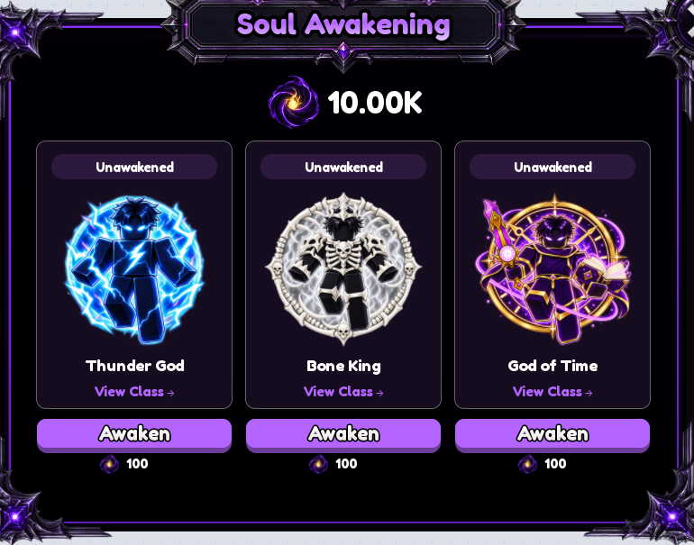
Which Class to Awaken? Beginners
Each class does a different job, so you level all three in turn. Push each one to about Lv.10–12 (as far as your Abyss Core allows) in this order:
- Thunder God: Lightning damage. Early on, Skull deals less damage than LB, so everyone starts on the Lightning build. This is your fastest damage gain at low level.
- Bone King: Skull damage. Skull damage scales with your revive count. Somewhere around 10–20M revives it catches up with LB, and you switch to Skull: its damage is steady, while LB relies on waiting for Thunder Apotheosis (TA) procs (see Skull vs. LB thresholds).
- God of Time: EXP. More EXP when you claim Guild Boss rewards, so you level faster. Levels matter for Vanguard Evolution 2 and Timeforged Sword evolutions.
| Level | Core | Success | Failure | Soul Luck | Success w/ Luck | Failure w/ Luck | Level Drop |
|---|---|---|---|---|---|---|---|
| 0→1 | 20 | 95% | 5% | — | — | — | — |
| 1→2 | 35 | 90% | 10% | — | — | — | None |
| 2→3 | 45 | 85% | 15% | — | — | — | None |
| 3→4 | 55 | 80% | 20% | — | — | — | None |
| 4→5 | 70 | 75% | 25% | — | — | — | None |
| 5→6 | 85 | 70% | 30% | — | — | — | None |
| 6→7 | 100 | 65% | 35% | — | — | — | None |
| 7→8 | 125 | 60% | 40% | — | — | — | −1 |
| 8→9 | 150 | 55% | 45% | — | — | — | −1 |
| 9→10 | 190 | 50% | 50% | 3 | 100% | 0% | −1 |
| 10→11 | 230 | 43% | 57% | 3 | 86% | 14% | −1 |
| 11→12 | 250 | 36% | 64% | 3 | 72% | 28% | −1 |
| 12→13 | 250 | 29% | 71% | 4 | 58% | 42% | −1 |
| 13→14 | 270 | 22% | 78% | 4 | 44% | 56% | −1 |
| 14→15 | 280 | 15% | 85% | 4 | 30% | 70% | −1 |
| 15→16 | 300 | 8% | 92% | 4 | 16% | 84% | −1 |
| 16→17 | 400 | 5% | 95% | 4 | 10% | 90% | −1 |
| 17→18 | 500 | 4% | 96% | 5 | 8% | 92% | −1 |
| 18→19 | 700 | 3% | 97% | 5 | 6% | 94% | −1 |
| 19→20 | ? | ? | ? | ? | ? | ? | ? |
“Level Drop” is how many levels you lose on a failed refine. Costs and rates for 19→20 aren't known yet.
Class Awakening Bonuses
Each class's bonus at every Soul Refinement level.
- Bone King and Thunder God scale the same way. Their multiplier grows ×2 per level for Lv.1–4, ×3 for Lv.5–8, ×4 for Lv.9–12, ×5 for Lv.13–16 and ×6 for Lv.17–20.
- God of Time gains +4.75% EXP per level, from 5% at Lv.0 to 100% at Lv.20.
| Level | Bone King Skull Damage | Thunder God Lightning Damage | God of Time EXP Gain |
|---|---|---|---|
| Lv.0 | ×1 | ×1 | 5% |
| Lv.1 | ×2 | ×2 | 9.75% |
| Lv.2 | ×4 | ×4 | 14.5% |
| Lv.3 | ×8 | ×8 | 19.25% |
| Lv.4 | ×16 | ×16 | 24% |
| Lv.5 | ×48 | ×48 | 28.75% |
| Lv.6 | ×144 | ×144 | 33.5% |
| Lv.7 | ×432 | ×432 | 38.25% |
| Lv.8 | ×1296 | ×1296 | 43% |
| Lv.9 | ×5184 | ×5184 | 47.75% |
| Lv.10 | ×20.73K | ×20.73K | 52.5% |
| Lv.11 | ×82.94K | ×82.94K | 57.25% |
| Lv.12 | ×331.77K | ×331.77K | 62% |
| Lv.13 | ×1.65M | ×1.65M | 66.75% |
| Lv.14 | ×8.29M | ×8.29M | 71.5% |
| Lv.15 | ×41.47M | ×41.47M | 76.25% |
| Lv.16 | ×207.36M | ×207.36M | 81% |
| Lv.17 | ×1.24B | ×1.24B | 85.75% |
| Lv.18 | ×7.46B | ×7.46B | 90.5% |
| Lv.19 | ×44.78B | ×44.78B | 95.25% |
| Lv.20 | ×268.73B | ×268.73B | 100% |
Soul Spawner NEW
- The Soul Spawner generates Souls over time. Its panel shows your rate per minute and how much is stored.
- Upgrading the Soul Spawner raises its output. At max level (Lv.5) it gives +200%.
- Output grows with your Ascension, roughly with Ascension cubed: going from Ascension 40 to 80 multiplies it by about ×7.
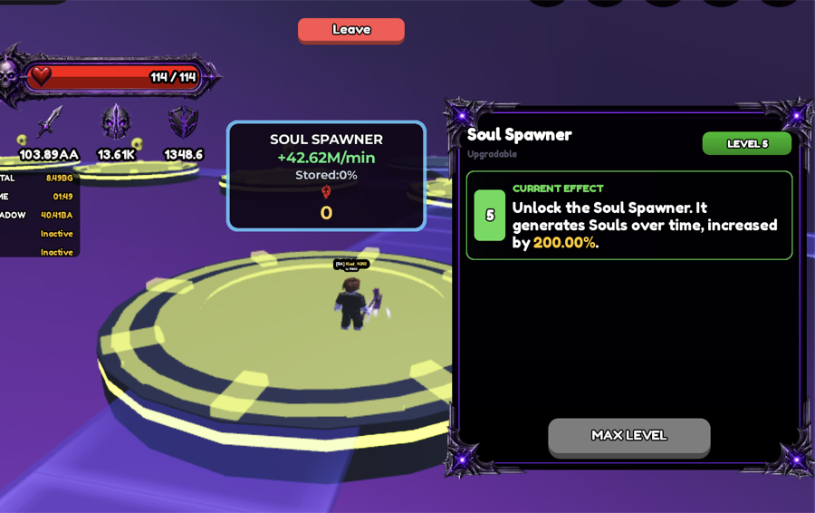
Midnight Harvester
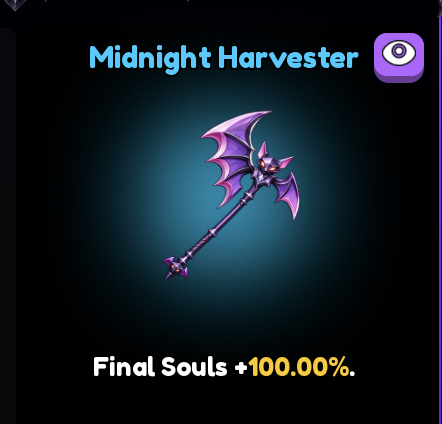
- The Midnight Harvester gives Final Souls +100%, plus 5% more per level. That doubles your Soul Spawner output from Lv.0.
Souls per Minute
Souls/min = 0.0001792 × (Ascension + 4.1211)3.0502 × H million, with a maxed (Lv.5) Soul Spawner.
- H = 1 without Midnight Harvester.
- H = 2 + 0.05 × Midnight Harvester Level with it.
This formula is fitted from player readings, not taken from the game code. It matches nine in-game readings from Ascension 24 to 81 to within 0.01%. Try your numbers in the Soul Spawner calculator.
Tools
Small utilities for the community.
Roblox Username Lookup
Enter a Roblox user ID to fetch their current username.
Relic Drop Odds by Level
Pick your relic level to see the drop chance of each rarity per kill, per run, and per 20 runs.
| Rarity | Per Kill | Per Run | Per 20 Runs |
|---|
Relic Stat Roll Odds
Pick a relic slot, rarity, and Main Stat, then up to 4 desired Sub-Stats. Slots the rarity can never roll are greyed out. The one slot beyond the rarity's more-common sub-stat count is a 3-way choice: "No Extra Sub-Stat" (forces the lower, more common count), "Any" (forces the rarer higher count, but that slot can be anything), or a specific Sub-Stat (forces the higher count with that stat required).
Main Stat
Sub-Stats
Sub-Stat slot availability and odds come from the rarity's "Initial Sub-Stat Count" chances. Sub-Stat Chances are assumed identical across all 5 slots (confirmed for Lantern and Codex; not independently verified for Mask/Chain/Core).
Shadow Sword Drop Odds
Chance of a Shadow Sword dropping per Shadow Realm floor and across a full 6-floor run.
Shadow Realm Upgrades
Run Buffs
| Floor | Chance / Enemy | Enemies | Floor Chance |
|---|
Guild Perk (+10% per level), Death Coin (+100%) and the 2K Hours title (+100%) add together; Pillar (×3) then multiplies the total. Checked against in-game odds: Guild Perk 10 + Death Coin + Pillar shows 0.9% on Floor 1 = 0.1% × (1 + 100% + 100%) × 3.
Nightmare Labyrinth Rewards
Expected rewards from Nightmare Labyrinth chests by difficulty and level.
| Chest Rarity | Chance | Chests / Run |
|---|
| Reward | Per Run | Per 10 Runs |
|---|
Levels 1/2/3 give 2/3/5 random chests. Solving the puzzle adds one guaranteed chest: Epic on Easy, Legendary on Medium, Mythic on Hard, Artifact on Hell.
Timeforged Sword Damage
Timeforged Sword (TF) damage grows with your TF level and online hours: Damage = (TF Level × Online Hours)power. Each evolution raises the power.
| Evolution | Power | Damage | vs. Your Evo | ×2 Hours or Level |
|---|
Damage vs. online hours, all evolutions
Curves use your TF level; dots mark your online hours. On log scale each gridline is ×10, so a steeper line means faster growth. Doubling hours and level multiplies damage by 22×power (×32 on Evo 6).
Gold Weapon Stone: SoD or TF?
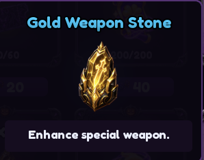
A Gold Weapon Stone gives +1 level to the Timeforged Sword (TF), Sword of Darkness (SoD), Shadow Sword or Midnight Harvester. For damage, it comes down to SoD vs. TF: both are independent damage multipliers, so pick whichever one a level grows by more.
- SoD: Independent Damage = Ascension × (Lv.+1) + Rebirth × (Lv.+1) × 10%. One level multiplies it by (Lv.+2)/(Lv.+1). Your Ascension and Rebirth don't change the answer. SoD maxes out at Lv.60; after that every stone goes to TF.
- Taiji power is (Light Lv.+1) × (Dark Lv.+1), so a Dark level also grows Taiji by the same amount. While Taiji is active it dwarfs everything else, so a SoD level is worth that gain squared. Taiji duration (10/15/20s) doesn't change the pick.
- TF: damage is (TF Level × Online Hours)power, so one level multiplies it by ((Lv.+1)/Lv.)power. Online hours don't change the answer.
| Next Level | Damage Gain |
|---|
Which sword wins at each level pair
Above your evo's line, the next stone goes to SoD; below it, to TF. Gray lines are the other evos. The dot is you now; the stepped path is where the best split of your stones takes you (it follows the line once it reaches it).
Total damage gain vs. stones spent
Damage multiplier after spending stones, compared with putting every stone into one sword.
Soul Spawner
How many Souls a maxed (Lv.5) Soul Spawner makes at your Ascension, with and without the Midnight Harvester. Uses the fitted formula from the Soul Spawner guide.
| Time | Without Harvester | With Harvester |
|---|
Souls per minute vs. Ascension
Dots mark your Ascension. The Midnight Harvester lifts the whole curve: ×2 at Lv.0, +5% more per level.
Level XP
How many days of Guild Boss (GB) rewards and Demon Realms it takes to reach a target level. XP needed for the next level is 1.35 × Level². Your XP income doesn't depend on your level at all: it comes from your Rebirths, Ascension, XP buffs and GB level, so higher levels take longer and longer.
| Time | XP Earned | Level Reached |
|---|
XP formulas
Every XP source we've measured uses the same multiplier:
M = Rebirths × Ascension × (1 + Guild %) × (1 + Double XP + Friends + Patron + Alliance Experience Boost + Relic Exp % + Death Coins) × (1 + God of Time) × VIP 1.2 × Flood of Wisdom 1.25 × EXP Potion 1.57
Each Rebirth multiplies your XP by your Rebirth count, so Rebirth 391 earns 391/390 of Rebirth 390. Ascension multiplies by its number, as the Ascension screen shows (EXP ×71 at Ascension 71). The last group adds up: Double XP Boost is +100%, each friend in the server +10%, the Patron title +5% to +25%, the Alliance Experience Boost +5% per level (+15% at Lv.3), relics their Exp %, Death Coins their EXP % (a full set of five 60% coins is +300%). Because they add up, a +100% relic on top of Double XP and a few friends raises XP by about 40%, not ×2. The Lone Survivor title gives no XP that we can measure: two friends joining an empty server added exactly their +20%. The God of Time class multiplies on its own (the game calls it “independent” EXP): 5% at Lv.0 plus 4.75% per level, 100% at Lv.20. From Lv.4 its Shared Wisdom gives everyone else in the server 20% of that bonus; only the best one counts, and your own God of Time replaces it when it’s higher. VIP’s +20% and the Flood of Wisdom pillar’s ×1.25 also multiply on their own, and so does the EXP Potion: despite its “+100%” description it multiplies XP by 1.57, with or without relics.
Guild Boss: EXP ≈ 597K × (GB Level + 4) × M × kill bonus × (1 + Alliance Boss Reward Bonus)
You can claim 6 GB rewards per day. The kill bonus grows with each one: ×1.0, 1.1, 1.2, 1.3, 1.5 and ×2.0 for the 6th, so all six together are worth 8.1 first kills. The GB's coin reward (the +1,655 next to the level) follows 23 × (GB Level + 4).
Demon Realm: XP per 0.3s ≈ 573 × M
Once the Demon Realm boss dies, everyone in the server gets this every 0.3s until the realm closes at :50. Ticks actually land about every 0.32s, so real income is about 93% of the number the realm shows.
These formulas are fitted from our own in-game readings, not taken from the game code. Level XP matches six readings from Lv.84,729 to Lv.276,185. The GB constant is fitted to three characters (Ascension 44, 59 and 71, Rebirth 236, 324 and 390) and matches each within 1.7%; the Ascension 44 one reads about 2% more than shown, so the formula may underestimate low Ascensions. All our test characters are in one alliance (Experience Boost and Boss Reward Bonus Lv.3), so the perks are divided out of the constants by their listed %; switching relics on and off shows Experience Boost adds to the same group as Double XP. The Demon Realm constant comes from one empty-server reading, scaled to match. On a busy server expect a few percent more than shown if someone there has God of Time Lv.4+ and you don’t set it. Relic, Friend and Rebirth changes match within 0.3%. Whether the guild % multiplies separately is the least certain part. The GB Level term matches GB Lv.68–78. Death Coins, relics, the Patron title, God of Time (with Shared Wisdom), Flood of Wisdom and the EXP Potion were each switched on and off against the Boss Rewards list to find where they sit. VIP was on in every test. Hellroad isn't counted. XP fields take game-style numbers like 8.31B, 1.5T or 3e15.